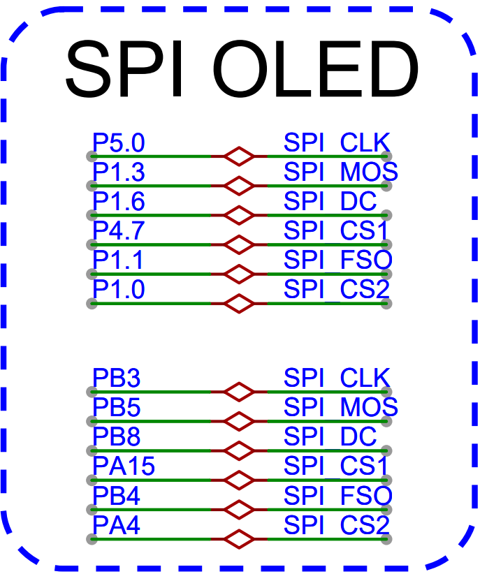
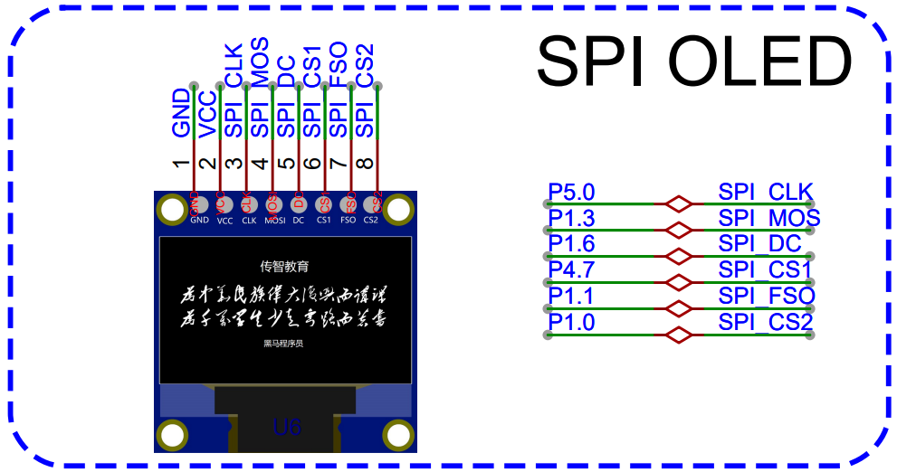
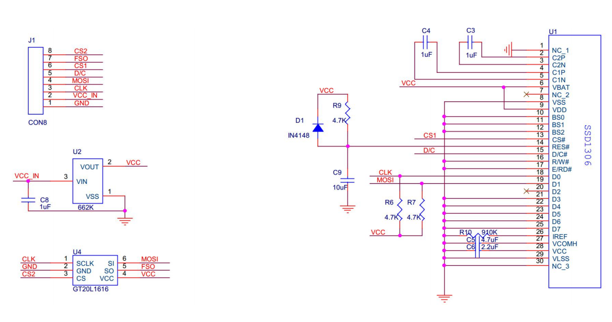
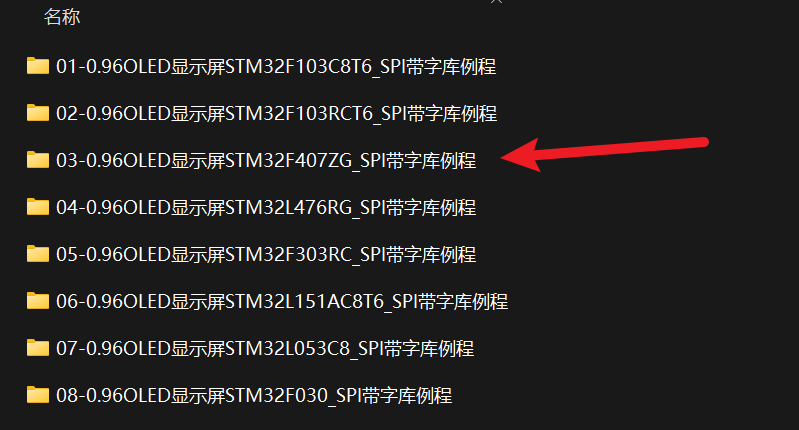

<!DOCTYPE lake>
<h2 data-lake-id="xwgcS" id="xwgcS"><span data-lake-id="ua6cb577f" id="ua6cb577f">学习目标</span></h2><ol list="uf48d6ae6"><li data-lake-id="ue496d701" fid="u01ef5095" id="ue496d701"><span data-lake-id="u43b009b5" id="u43b009b5">掌握移植方法</span></li><li data-lake-id="u1d62a6e0" fid="u01ef5095" id="u1d62a6e0"><span data-lake-id="u253db47b" id="u253db47b">掌握调试方式</span></li></ol><p data-lake-id="u235ff719" id="u235ff719"><span data-lake-id="u188cf2c4" id="u188cf2c4">​</span><br/></p><h2 data-lake-id="enUlS" id="enUlS"><span data-lake-id="ubce4d477" id="ubce4d477">学习内容</span></h2><h3 data-lake-id="G5fgz" id="G5fgz"><span data-lake-id="u8d1a7769" id="u8d1a7769">需求</span></h3><p data-lake-id="u9a0a6d08" id="u9a0a6d08"></p><h3 data-lake-id="rpug8" id="rpug8"><span data-lake-id="ud6db96a7" id="ud6db96a7">官方测试示例</span></h3><p data-lake-id="u92081c12" id="u92081c12"></p><h4 data-lake-id="gaj1K" id="gaj1K"><span data-lake-id="u3a54831c" id="u3a54831c">选择对应的平台</span></h4><p data-lake-id="u12cd80db" id="u12cd80db"><span data-lake-id="uaa183c7c" id="uaa183c7c">测试示例中，找到芯片对应平台，我们选择的是</span><code data-lake-id="u5d132bcd" id="u5d132bcd"><span data-lake-id="u63da1401" id="u63da1401">STM32F407</span></code></p><p data-lake-id="uc50513e9" id="uc50513e9"></p><h4 data-lake-id="I2mrb" id="I2mrb"><span data-lake-id="uf452fa86" id="uf452fa86">修改例程</span></h4><p data-lake-id="u496179cd" id="u496179cd"><span data-lake-id="u5e4de502" id="u5e4de502">已知错误修改：</span></p><span class="yuque-card-unsupported">[codeblock]</span><p data-lake-id="u106cae2b" id="u106cae2b"><span data-lake-id="ua1f3d4ac" id="ua1f3d4ac">引脚定义修改：</span></p><span class="yuque-card-unsupported">[codeblock]</span><p data-lake-id="u9f0d7cfd" id="u9f0d7cfd"><span data-lake-id="u16cc2ec2" id="u16cc2ec2">初始化逻辑修改:</span></p><span class="yuque-card-unsupported">[codeblock]</span><h4 data-lake-id="xuZoC" id="xuZoC"><span data-lake-id="u199f7cbf" id="u199f7cbf">烧录测试</span></h4><p data-lake-id="uea6d2b15" id="uea6d2b15"><span data-lake-id="u9a78e513" id="u9a78e513">修改芯片设置，修改烧录方式为</span><code data-lake-id="u9ef94a19" id="u9ef94a19"><span data-lake-id="u74fb03a3" id="u74fb03a3">DAP Link</span></code><span data-lake-id="u53ffe2cd" id="u53ffe2cd">，烧录到当前GD32F470芯片中</span></p><h3 data-lake-id="DH9Ck" id="DH9Ck"><span data-lake-id="u7a34382f" id="u7a34382f">STM32自己环境</span></h3><p data-lake-id="u7f65a859" id="u7f65a859"><span data-lake-id="ucb1c58a6" id="ucb1c58a6">官方示例无法通过，切换自己的环境，进行测试。</span></p><ol list="u6ebfac56"><li data-lake-id="ud24ff398" fid="uf0fb379b" id="ud24ff398"><span data-lake-id="u4ae07e5b" id="u4ae07e5b">拷贝oled文件</span></li><li data-lake-id="u7b950b47" fid="uf0fb379b" id="u7b950b47"><span data-lake-id="u0ed3daba" id="u0ed3daba">拷贝main中的核心逻辑</span></li><li data-lake-id="uff9d457e" fid="uf0fb379b" id="uff9d457e"><span data-lake-id="ua4cd750b" id="ua4cd750b">修改不兼容的api</span></li></ol><h4 data-lake-id="z35se" id="z35se"><span data-lake-id="uf5345dc8" id="uf5345dc8">完整代码</span></h4><span class="yuque-card-unsupported">[codeblock]</span><span class="yuque-card-unsupported">[codeblock]</span><span class="yuque-card-unsupported">[codeblock]</span><h3 data-lake-id="dwCIk" id="dwCIk"><span data-lake-id="u7ca13cac" id="u7ca13cac">GD32环境</span></h3><h4 data-lake-id="koZBg" id="koZBg"><span data-lake-id="ube98cf81" id="ube98cf81">移植操作</span></h4><p data-lake-id="u36701729" id="u36701729"><span data-lake-id="u66d451b8" id="u66d451b8">只需要将API进行切换即可</span></p><ol list="u8879154d"><li data-lake-id="u1f10d9bb" fid="u06815902" id="u1f10d9bb"><span data-lake-id="u819c435a" id="u819c435a">换头</span></li><li data-lake-id="u8d7d16f1" fid="u06815902" id="u8d7d16f1"><span data-lake-id="u354ee66e" id="u354ee66e">换外设的api</span></li></ol><h4 data-lake-id="J8T88" id="J8T88"><span data-lake-id="u3c3b5117" id="u3c3b5117">完整代码</span></h4><span class="yuque-card-unsupported">[codeblock]</span><span class="yuque-card-unsupported">[codeblock]</span><span class="yuque-card-unsupported">[codeblock]</span><h3 data-lake-id="r7Pfs" id="r7Pfs"><span data-lake-id="u4c14a5cd" id="u4c14a5cd">软件和硬件SPI</span></h3><p data-lake-id="u64ccf009" id="u64ccf009"><span data-lake-id="u478089d3" id="u478089d3">SPI是主设备和从设备通讯的协议和桥梁，spi通常管理时钟，输入，输出。设备的切换，交给具体的设备，也就是片选交给具体的设备。</span></p><h4 data-lake-id="DVPZ2" id="DVPZ2"><span data-lake-id="u66a8deae" id="u66a8deae">完整代码</span></h4><span class="yuque-card-unsupported">[codeblock]</span><span class="yuque-card-unsupported">[codeblock]</span><span class="yuque-card-unsupported">[codeblock]</span><span class="yuque-card-unsupported">[codeblock]</span><p data-lake-id="u5c7f0717" id="u5c7f0717"><br/></p><h3 data-lake-id="sdY9S" id="sdY9S"><span data-lake-id="uedffb461" id="uedffb461">忽略指定警告</span></h3><p data-lake-id="uf53a5980" id="uf53a5980"><span data-lake-id="u8d48cc6f" id="u8d48cc6f">要在Keil中配置忽略</span><code data-lake-id="u36e2e3a7" id="u36e2e3a7"><span data-lake-id="u372e95d9" id="u372e95d9">-Winvalid-source-encoding</span></code><span data-lake-id="ua608d142" id="ua608d142">警告，您可以按照以下步骤进行操作：</span></p><p data-lake-id="ue4ee3534" id="ue4ee3534"><br/></p><ol list="ue8a167ee"><li data-lake-id="u10d28e2a" fid="ub615fef3" id="u10d28e2a"><span data-lake-id="u5211fbb2" id="u5211fbb2"> 打开Keil软件并打开您的项目。 </span></li><li data-lake-id="ud33b5b17" fid="ub615fef3" id="ud33b5b17"><span data-lake-id="u91b4f37a" id="u91b4f37a"> 在Keil的菜单栏中，选择 "Project" &gt; "Options for Target"。 </span></li><li data-lake-id="u3eb566c2" fid="ub615fef3" id="u3eb566c2"><span data-lake-id="u5d1c2afb" id="u5d1c2afb"> 在弹出的对话框中，选择 "C/C++" 选项卡。 </span></li><li data-lake-id="u5eb98c40" fid="ub615fef3" id="u5eb98c40"><span data-lake-id="u6c4a165b" id="u6c4a165b"> 在 "Misc Controls" 部分的 "Other Compiler Options" 字段中添加以下内容： </span></li></ol><span class="yuque-card-unsupported">[codeblock]</span><p data-lake-id="u3388e935" id="u3388e935" style="text-indent: 2em"><span data-lake-id="ub40d82db" id="ub40d82db">这将告诉编译器忽略</span><code data-lake-id="u0d8e6005" id="u0d8e6005"><span data-lake-id="u138560dd" id="u138560dd">-Winvalid-source-encoding</span></code><span data-lake-id="u8f38287d" id="u8f38287d">警告。 注意</span><code data-lake-id="ub79be028" id="ub79be028"><span data-lake-id="ucecc273a" id="ucecc273a">-W</span></code><span data-lake-id="u198b8dbd" id="u198b8dbd">后多加了个</span><code data-lake-id="uda1156b8" id="uda1156b8"><strong><span data-lake-id="u11d3df68" id="u11d3df68" style="color: #DF2A3F">no-</span></strong></code></p><ol list="uc033e137" start="5"><li data-lake-id="u3b2d24ea" fid="ucea94a80" id="u3b2d24ea"><span data-lake-id="u04dc08a9" id="u04dc08a9"> 单击 "OK" 保存更改并关闭对话框。 </span></li><li data-lake-id="ua7abd854" fid="ucea94a80" id="ua7abd854"><span data-lake-id="u3c2fea92" id="u3c2fea92"> 重新编译您的项目，编译器将不再显示</span><code data-lake-id="u24a706e5" id="u24a706e5"><span data-lake-id="u7db66865" id="u7db66865">-Winvalid-source-encoding</span></code><span data-lake-id="u1f12a772" id="u1f12a772">警告。 </span></li></ol><p data-lake-id="u1d28615a" id="u1d28615a"><br/></p><p data-lake-id="u0f644f21" id="u0f644f21"><span data-lake-id="u8050fc58" id="u8050fc58">请注意，这只是忽略该特定警告的方法。确保在忽略警告之前了解其含义，并确保您的代码没有潜在的问题。</span></p>